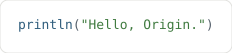
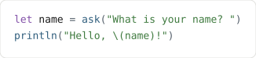
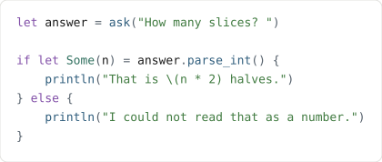
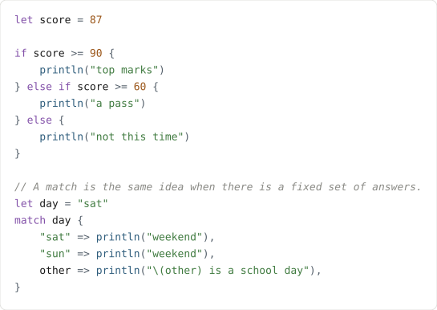
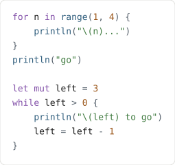
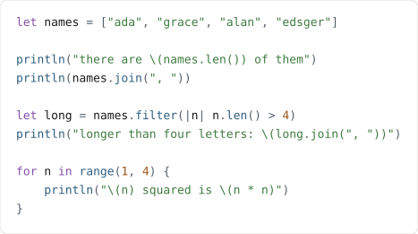
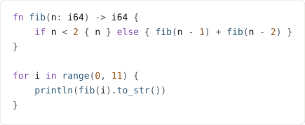
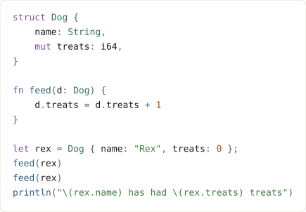
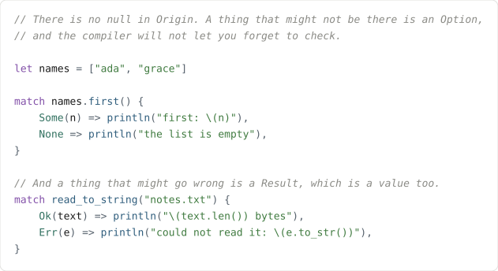

Learn Origin in nine steps
You do not need to install anything. Every program below runs in your own browser, in the playground, and nothing you write is ever sent anywhere. Each step has a Run it button that opens the playground with that program already in it.
1 · Say something
This is a whole Origin program. Not the interesting part of one — the whole thing. There
is no main to write, no imports, no boilerplate: the lines in the file are
the program, and they run from the top.

prints Hello, Origin.
2 · Ask a question
ask prints a question and waits for an answer. Whatever is typed comes back
as text, and \(name) inside a string drops that text into it.

In the playground there is no keyboard to wait for, so the input box
under the editor is what the program reads. Type Ada in it and this prints
Hello, Ada!
3 · Get a number
An answer is always text, even when it looks like a number, so you turn it into one with
parse_int(). That might not work — somebody can type banana —
so it gives you back a maybe, and if let Some(n) is how you ask
“did it work?”. Origin will not let you skip that question, which is why an Origin
program cannot crash on a number that was never there.

with 4 in the input box, prints That is 8 halves.
4 · Make a choice
if does what you expect. match is the other way to choose: you
list the answers you care about, and the last one catches everything else.

prints a pass and then weekend
5 · Do it again
for n in range(1, 4) counts 1, 2, 3 — the second number is where it stops,
not the last one it uses. while keeps going until you say otherwise. A name
you want to change has to say mut; anything else cannot be reassigned, which
catches a whole family of mistakes before the program runs.

prints 1... 2... 3... go, then counts down
6 · Keep several things
Square brackets make a list. Once you have one you can ask it things
(len), stick it together (join), keep only some of it
(filter), or change every item (map). The
|n| n.len() > 4 bit is a small unnamed function: given an n, is it
longer than four?

prints the count, the names joined by commas, then the long ones
7 · Name a piece of work
A function says what goes in and what comes out — n: i64 in,
-> i64 out. Origin makes you write those down. It is two more words than
a language that guesses, and in exchange the compiler catches the mistake where you hand
a function the wrong thing.
The last line of a function is what it gives back, with no return needed.

prints the first eleven Fibonacci numbers
8 · Make your own kind of thing
A struct groups values under one name. A field you want to be able to change
says mut, and one that does not cannot be changed by anybody — not by you,
not by a function you pass it to.

prints Rex has had 2 treats
9 · When there is nothing, and when it goes wrong
Origin has no null. Something that might not be there is an
Option: either Some(value) or None, and you have
to say what you would do in each case. Something that might fail is a
Result: Ok(value) or Err(reason), and the same
rule applies.
That is the whole error story. There are no exceptions to catch and nothing that throws from somewhere you were not looking.

Where to go next
The playground’s Example menu has bigger programs: green threads, a garbage-collection stress test, generics with a trait bound. They are the same programs the compiler’s own test suite runs, so if one of them works here, it works.
Everything on this page is a program the project compiles as part of its tests. If one of them ever stopped compiling, the build would fail before you ever saw it.